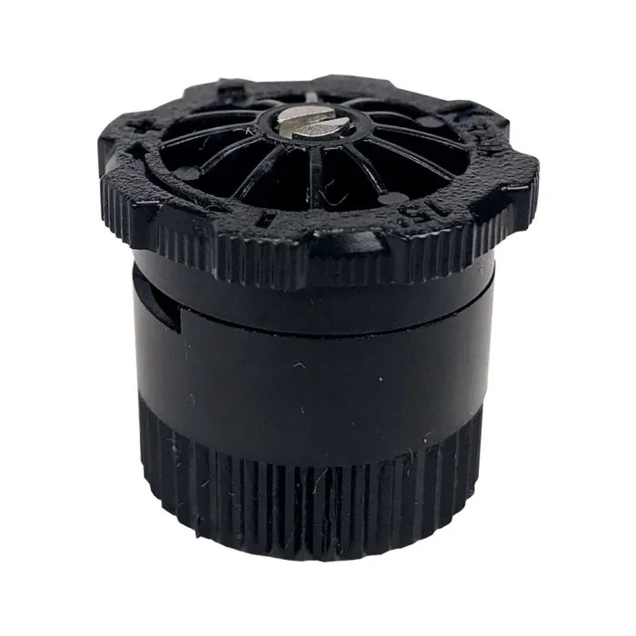

PROJECT
Sprinkler Outlet Geometry CFD Study
Florida Atlantic University | Simulations for Krain Company | Spring 2026

alt="KVF15 sprinkler">Project Overview
CFD comparison of several candidate outlet geometries for flow through a sprinkler, aimed at identifying which design gives the most symmetric flow at the outlet. Identified the best-performing, most symmetric candidates.